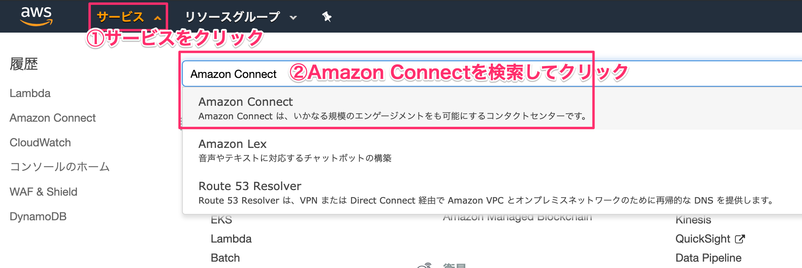
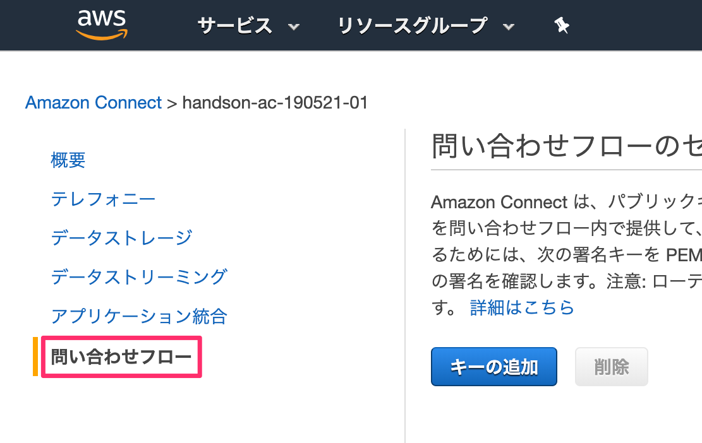
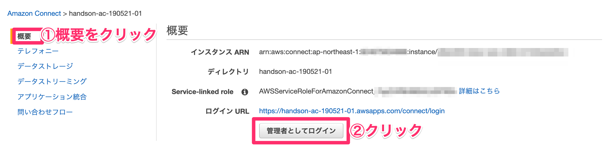
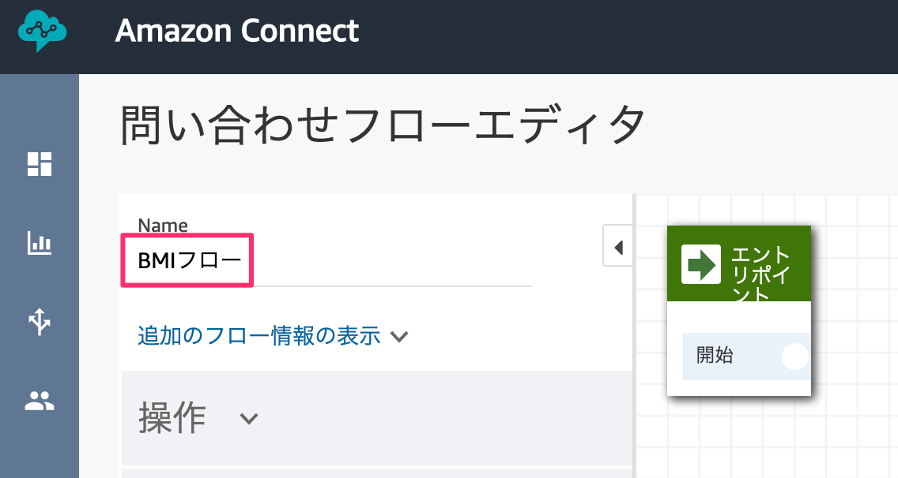
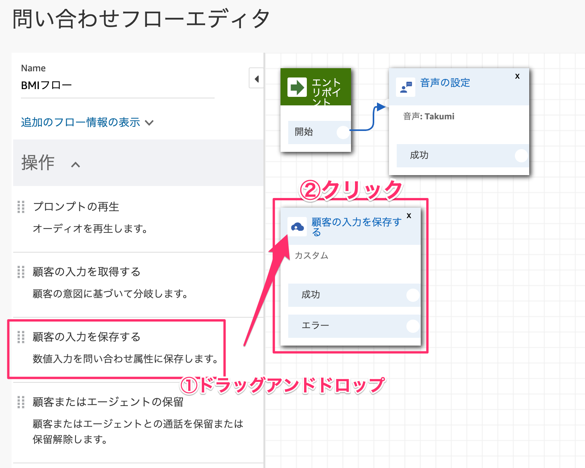
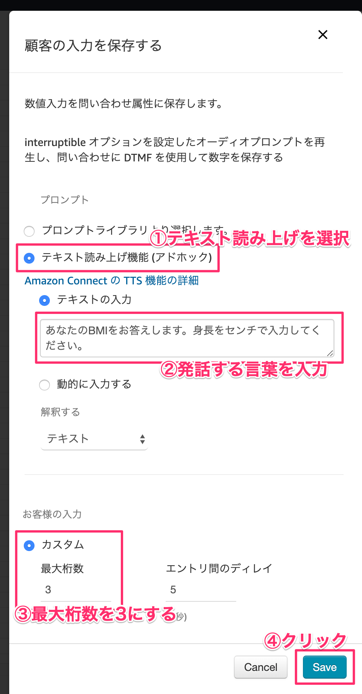
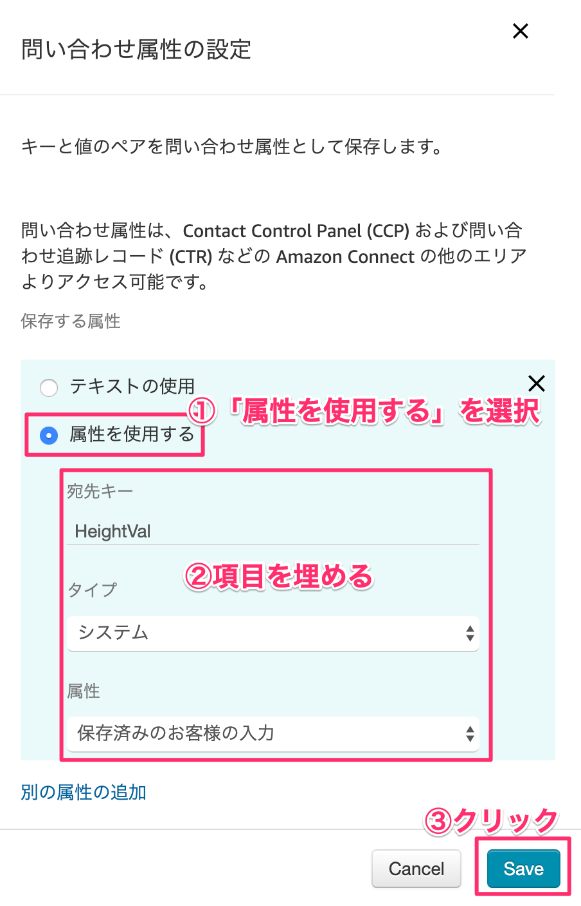
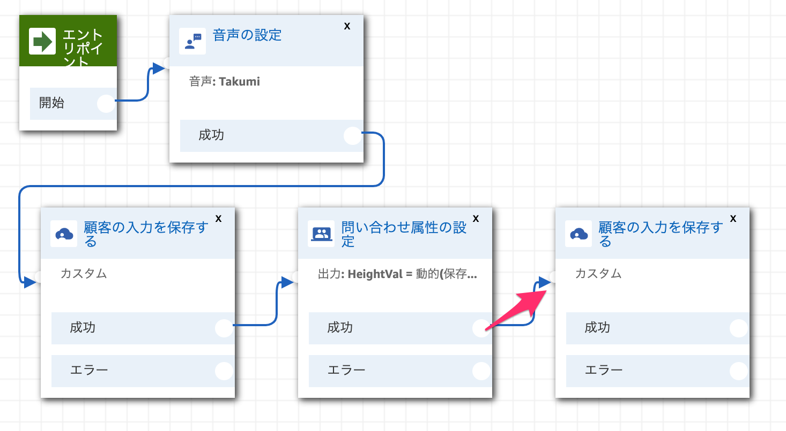
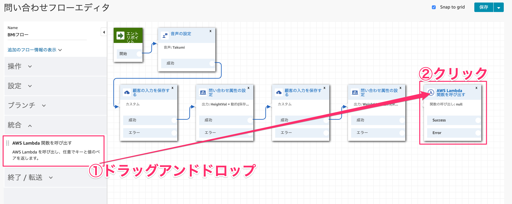
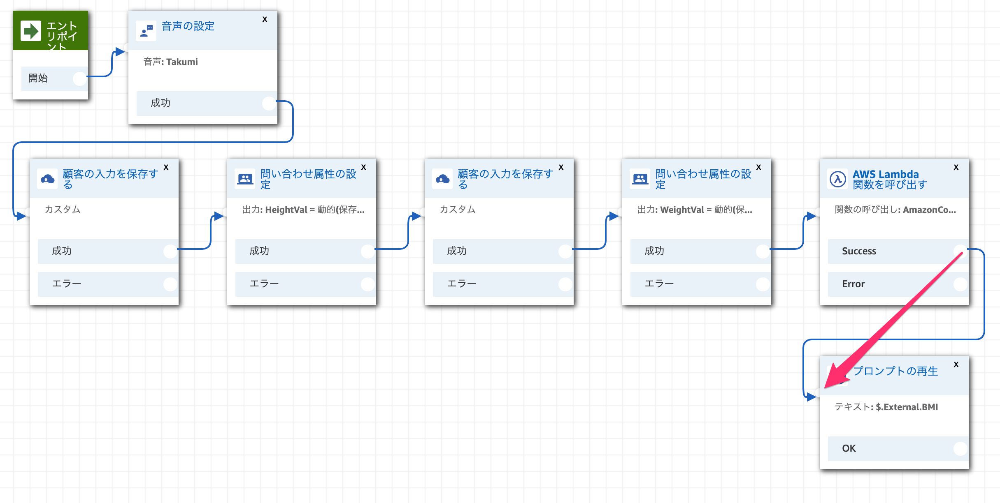

1-1. Lambda関数を作成する
サービス部分をクリックしてメニューを展開します。そこの検索窓に「Lambda」と入力します。
［関数の作成］ボタンをクリックします。

各項目を埋めて、［関数の作成］ボタンをクリックします。
①関数名 | AmazonConnect-BMI |
②実行ロール | AWSポリシーテンプレートから新しいロールを作成 |
③ロール名 | AmazonConnect-Role |
④ポリシーテンプレート | シンプルなマイクロサービスのアクセス権限 |
index.jsを全て下記に書き換えます。書き換えたら右上の［保存］ボタンをクリックします。
exports.handler = async (event) => {
// 身長と体重を取得する
const heightVal = event.Details.ContactData.Attributes.HeightVal;
const weightVal = event.Details.ContactData.Attributes.WeightVal;
// BMI計算
const bmiVal = (parseFloat(weightVal) / (parseFloat(heightVal)/100 * parseFloat(heightVal)/100)).toFixed(1);
// 標準体重
const stdWeight = (22 * (parseFloat(heightVal)/100 * parseFloat(heightVal)/100)).toFixed(1);
var speechText = `あなたのBMIは${bmiVal}です。標準体重は${stdWeight}kgです。`;
return {"BMI": speechText};
};
2-1. LambdaをAmazon Connectに適用する
サービスを展開して、検索窓に「Amazon Connect」と入力してクリックします。

左側メニューから「問い合わせフロー」をクリックします。

AWS Lambdaの項目までスクロールして、関数のプルダウンメニューから「AmazonConnect-BMI」の関数を選択します。
選択したら、［追加］ボタンをクリックします。

左側メニューから「概要」をクリックします。［管理者としてログイン］をクリックします。

2-2.問い合わせフローの作成
［問い合わせフローの作成］をクリックします。

名前を「BMIフロー」と入力します。

設定カテゴリにある「音声の設定」ブロックをドラッグアンドドロップして、ドロップしたブロックをクリックします。

言語は「日本語」でお好きな音声を選択してください。

エントリポイントと音声の設定ブロックを繋げます。

操作カテゴリの「顧客の入力を保存する」をドラッグアンドドロップしてクリックします。

「テキストの読み上げ」を選択し、発話する内容を入力します。身長の桁数は3桁なので、最大桁数は3桁に設定します。

ブロックを繋げます。
設定カテゴリにある「問い合わせ属性の設定」をドラッグアンドドロップします。

「属性を使用する」を選択し、項目を埋めていきます。
宛先キーは大文字小文字に気をつけてください。
宛先キー | HeightVal ※大文字小文字は一致させてください |
タイプ | システム |
属性 | 保存済みのお客様の入力 |

ブロックを繋げます。
操作カテゴリの「顧客の入力を保存する」をドラッグアンドドロップします。

「テキストの読み上げ機能」を選択し、発話する内容を入力します。体重の最大桁数は3桁にします。

ブロックを繋げます。

設定カテゴリにある「問い合わせ属性の設定」をドラッグアンドドロップします。

「属性を使用する」を選択し、項目を埋めていきます。
宛先キーは大文字小文字に気をつけてください。
宛先キー | WeightVal ※大文字小文字は一致させてください |
タイプ | システム |
属性 | 保存済みのお客様の入力 |

ブロックを繋げます。

統合カテゴリにある「AWS Lambda 関数を呼び出す」をドラッグアンドドロップします。

関数は先程作成した「AmazonConnect-BMI」を選択します。

ブロックを繋げます。

操作カテゴリの「プロンプトの再生」をドラッグアンドドロップします。

「テキストの読み上げ機能」を選択し、下記コードを入力します。
Lambdaから帰ってくるbodyは「$.External」に格納されます。
$.External.BMI

ブロックを繋げます。

終了カテゴリーの「切断/ハングアップ」をドラッグアンドドロップします。

未接続のノードを全て「切断/ハングアップ」ブロックに繋げます。

右上の［保存して発行］ボタンをクリックします。

左側メニューのルーティングから［電話番号］をクリックします。

電話番号をクリックします。

問い合わせフローを作成した「BMIフロー」を選択します。

これで電話番号かけて、身長と体重の値を入力すればBMI値が返ってきます。
3-1. テーブルを作成する
サービスから「DynamoDB」を検索してクリックします。
［テーブルの作成］ボタンをクリックします。
テーブル名とプライマリキーを入力して［作成］ボタンをクリックします。
テーブル名 | PhoneHistory |
プライマリキー | Timestamp |

Lambda画面を開いて、新しいファイルを新規作成します。［＋］ボタンをクリックし、［New File］をクリックします。
下記コードを入力します。
'use strict';
const AWS = require('aws-sdk');
const DynamoDB = new AWS.DynamoDB.DocumentClient({
region: "ap-northeast-1"
});
// 日付フォーマット変更
module.exports.dateToStr12HPad0 = function dateToStr12HPad0(date, format) {
if (!format) {
format = 'YYYY/MM/DD hh:mm:dd AP';
}
format = format.replace(/YYYY/g, date.getFullYear());
format = format.replace(/MM/g, ('0' + (date.getMonth() + 1)).slice(-2));
format = format.replace(/DD/g, ('0' + date.getDate()).slice(-2));
format = format.replace(/hh/g, ('0' + date.getHours()).slice(-2));
format = format.replace(/mm/g, ('0' + date.getMinutes()).slice(-2));
format = format.replace(/ss/g, ('0' + date.getSeconds()).slice(-2));
format = format.replace(/dd/g, ('0' + date.getMilliseconds()).slice(-3));
return format;
};
// 着信履歴を残す
module.exports.putPhoneNo = async function putPhoneNo(phoneNo) {
// テーブル名取得
const tableName = process.env.TABLE_NAME;
var timezoneoffset = -9; // UTC-表示したいタイムゾーン(単位:hour)。JSTなら-9
var today = new Date(Date.now() - (timezoneoffset * 60 - new Date().getTimezoneOffset()) * 60000);
const timestamp = this.dateToStr12HPad0(today, 'YYYY/MM/DD hh:mm:ss:dd');
// DynamoDBにデータを保存する
await DynamoDB.put( {
"TableName": tableName,
"Item": {
"Timestamp": timestamp,
"phoneNo": phoneNo
}
}, function( err, data ) {
console.log(err);
}).promise();
};
キーボードのコントロール+Sキーでファイルを保存します。ファイル名は「util.js」にして［Save］ボタンをクリックします。

環境変数を設定します。
キー | TABLE_NAME |
値 | PhoneHistory |
index.jsのソースを編集します。
// utilファイルを読み取り
const Util = require('util.js');
exports.handler = async (event) => {
// 発信者番号
const phoneNumber = event.Details.ContactData.CustomerEndpoint.Address;
// 発信者番号をDynamoDBに記録
await Util.putPhoneNo(phoneNumber);
// 身長と体重を取得する
const heightVal = event.Details.ContactData.Attributes.HeightVal;
const weightVal = event.Details.ContactData.Attributes.WeightVal;
// BMI計算
const bmiVal = (parseFloat(weightVal) / (parseFloat(heightVal)/100 * parseFloat(heightVal)/100)).toFixed(1);
// 標準体重
const stdWeight = (22 * (parseFloat(heightVal)/100 * parseFloat(heightVal)/100)).toFixed(1);
var speechText = `あなたのBMIは${bmiVal}です。標準体重は${stdWeight}kgです。`;
return {"BMI": speechText};
};

これでAmazon Connectの電話にかけてBMIの返答が返ってきたら、DynamoDBに発信者の電話番号が記録されます。